Supervised learning: foundations, evaluation and tuning
Olga Dethlefsen, PhD
Outline
- Introduction: from inference to prediction
- KNN: K-nearest neighbors
- SVM: Support vector machines
- Data splitting
- Model evaluation
- Tuning and cross-validation
- Final model
What is supervised learning?
From inference to prediction
Inference:
Understanding relationships between variables.
- Which variables are associated with an outcome?
- What is the magnitude and uncertainty of these associations?
Prediction:
Predicting outcomes for new observations.
- Can we use measured variables to predict an outcome?
- How well does our model perform on unseen data?
Explaining relationships is not the same as making accurate predictions. However, many methods, such as linear models, can be used for both inference and prediction.
What is supervised learning?
Two types of prediction tasks
Regression
Predict a continuous outcome.
Example: Predict chronological age from DNA methylation measurements.
\[ \hat{y} = \text{predicted age} \]
Classification
Predict a categorical outcome.
Example: Predict whether a tumour is benign or malignant from biopsy measurements.
\[ \hat{y} \in \{\text{benign}, \text{malignant}\} \]
What is supervised learning?
In supervised learning, we train a model using observations with known outcomes (labels).
- Features / predictors (\(X\)): the input variables used for predictions, e.g. image-derived features
- Target / outcome (\(y\)): the known outcome we want to predict.e.g. treatment response
- Training: Learning relationships between predictors and the outcome.
The learning algorithm uses the features and their corresponding targets to learn a function:
\[\hat{y} = f(X)\]
where \(f\) represents the model and \(\hat{y}\) is the predicted outcome.
Once trained, the model can make predictions for new observations.
The goal
The central goal is generalization: the ability to make accurate predictions on new, unseen data.
What is supervised learning?
Supervised learning models
Different algorithms learn relationships between features and targets in different ways.
Some commonly used supervised learning algorithms include:
- Linear and logistic regression: Learn relationships between features and outcomes by estimating model coefficients.
- K-nearest neighbors (KNN): Makes predictions using nearby training observations by comparing distances and identifying nearest neighbors.
- Support Vector Machines (SVM): Learn by finding a decision boundary that separates classes with the largest possible margin (with extensions for nonlinear relationships and regression).
- Decision trees: Learn by recursively splitting the data based on feature values to form prediction rules.
- Random Forests: Learn by combining many decision trees, each trained on different samples and using random subsets of features.
- Artificial Neural Networks (ANN): Learn by iteratively adjusting weights between interconnected computational units to minimize prediction errors.
KNN: K-nearest neighbors
KNN
- A supervised learning algorithm that makes predictions based on similarity between observations.
- Key assumption: Observations with similar features are likely to have similar outcomes.
- For a new observation, KNN identifies the \(k\) closest training observations:
- Classification: Predicts the most common class among the neighbors.
- Regression: Predicts the average outcome among the neighbors.
- KNN retains the training observations rather than fitting model coefficients during training (lazy learning).
KNN

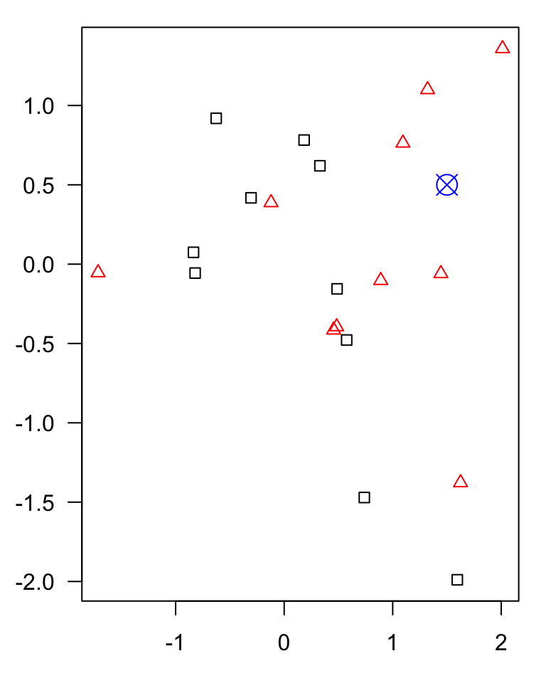
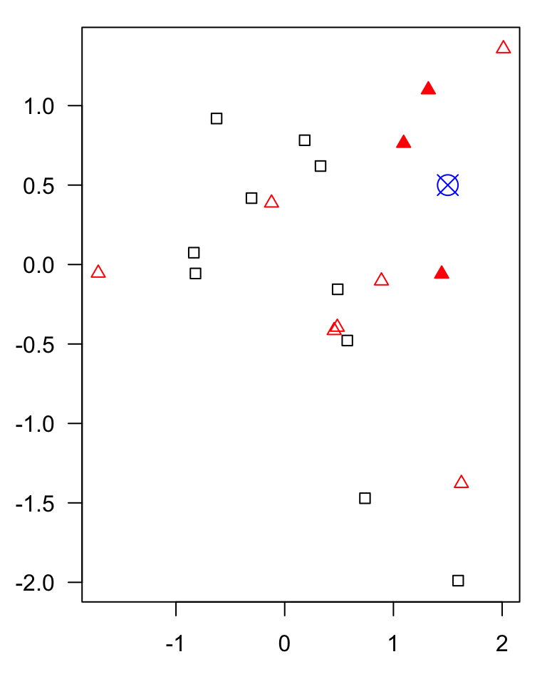
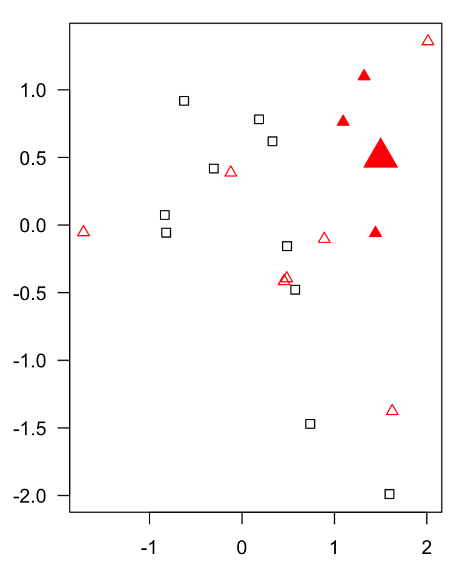
KNN
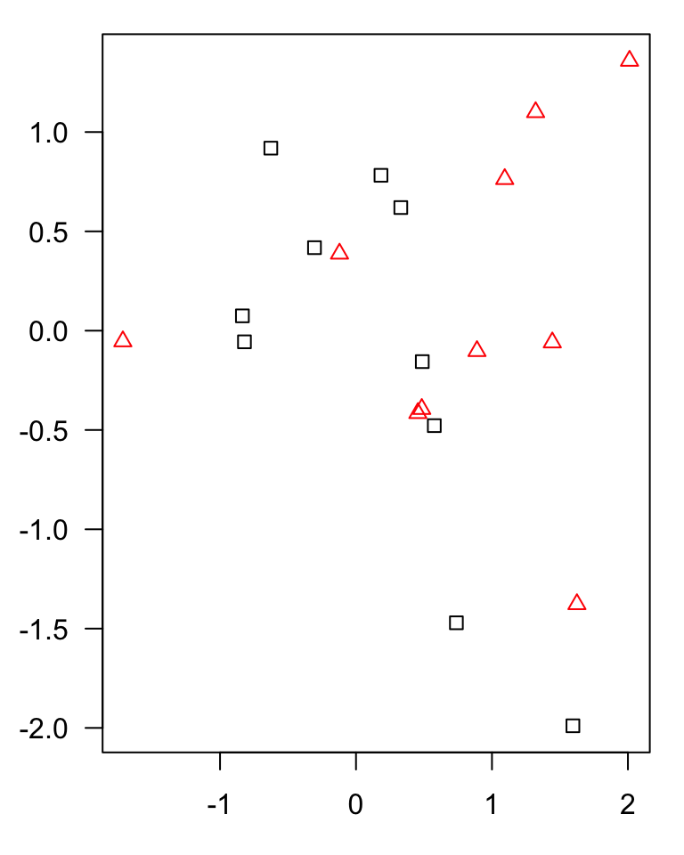
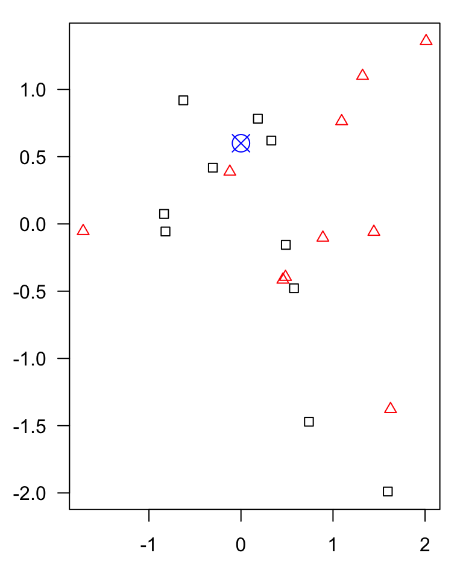
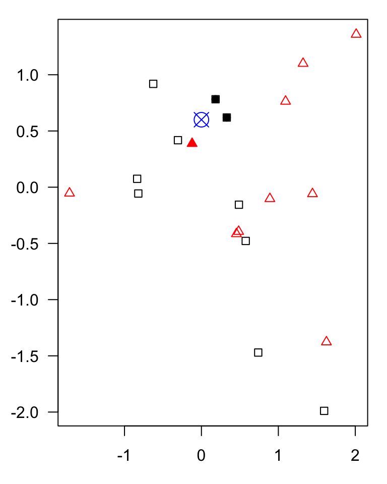
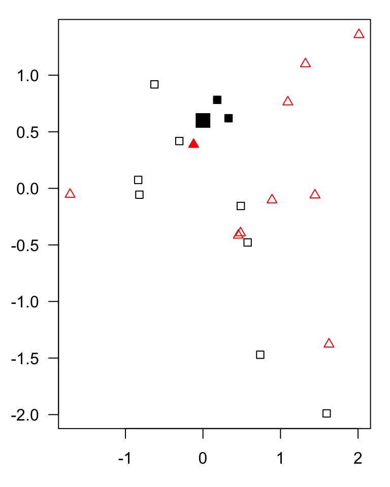
KNN
Choosing the number of neighbors (\(k\))
- \(k\) is a hyperparameter that controls the flexibility of the KNN model.
- Small \(k\) (e.g., \(k=1\)): More complex decision boundaries, sensitive to noise → risk of overfitting.
- Large \(k\): Smoother decision boundaries, may miss local patterns → risk of underfitting.
- There is no universally optimal \(k\); the best value depends on the dataset.
- We can select \(k\) using validation data or cross-validation.

Figure 1: Effect of the number of neighbors (k) on KNN decision boundaries. Smaller k produces more flexible boundaries, while larger k produces smoother predictions.
KNN
Why is feature scaling important?
KNN relies on distances between observations, so features with larger numerical ranges can dominate the distance calculation.
Standardization puts features on a comparable scale:
\[ z = \frac{x-\mu}{\sigma} \]
Each feature is transformed to have mean 0 and standard deviation 1 in the training data.
- To avoid data leakage!
- We estimate scaling parameters using training data only.
- We then apply the same transformation to validation, test and new data.
- During cross-validation, we fit scaling separately within each training fold.
KNN
Advantages and limitations of KNN
Advantages
- Simple to understand and implement.
- Makes few assumptions about the relationship between features and outcomes.
- Can capture nonlinear relationships.
- Works for both classification and regression.
Limitations
- Computationally expensive for large datasets at prediction time.
- Sensitive to feature scaling, noise and irrelevant features.
- Performance depends on the choice of \(k\) and distance metric.
- Struggles with high-dimensional data (curse of dimensionality).
KNN is simple and flexible, but requires careful preprocessing, model evaluation and hyperparameter tuning.
Support Vector Machines (SVM)
SVM
- A supervised learning algorithm used primarily for classification, but also for regression (SVR).
- SVM learns a decision boundary that separates observations belonging to different classes.
- The goal is to find a boundary that maximizes the margin between the classes.
- The observations closest to the boundary are called support vectors and help determine its position.
SVM
Finding a decision boundary
A linear SVM separates classes using a straight line (2D), a plane (3D), or a hyperplane (higher dimensions).
Among possible separating boundaries, SVM aims to find the one with the largest margin between the classes.
The decision boundary is defined by:
\[ \mathbf{w}^{T}\mathbf{x} + b = 0 \]
where \(\mathbf{w}\) represents learned feature weights, \(\mathbf{x}\) the input features, and \(b\) the intercept.
New observations are classified according to which side of the boundary they fall on.
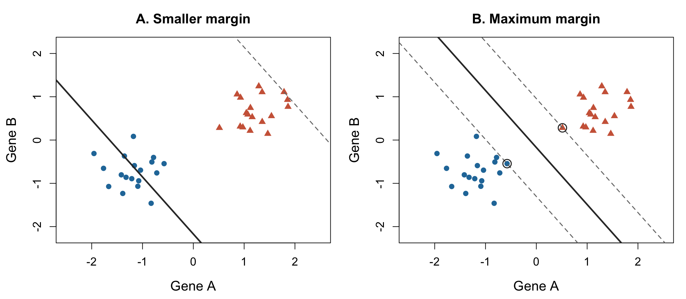
Figure 2: Maximum-margin principle in linear SVM. (A) A separating boundary with a smaller margin. (B) The maximum-margin boundary selected by SVM. Circled observations are support vectors.
SVM
Soft-margin SVM: Allowing classification errors
- Real biological data often contain noise, variability and overlapping classes, making perfect separation impossible.
- Soft-margin SVM allows some observations to fall inside the margin or be misclassified.
- The hyperparameter \(C\) (cost) controls the trade-off between maximizing the margin and penalizing margin violations:
- Small \(C\): Stronger regularization → wider margin, more tolerance for violations.
- Large \(C\): Weaker regularization → stronger penalties for violations, potentially narrower margin.
- The best value of \(C\) is typically selected using validation or cross-validation.

Figure 3: Soft-margin linear SVM fitted to the same overlapping dataset. Smaller C permits more margin violations, while larger C penalizes them more strongly.
SVM
Nonlinear SVM: The kernel trick
- Biological relationships are often nonlinear, and classes may not be separable by a straight line.
- Kernel functions allow SVM to learn nonlinear decision boundaries by implicitly working in a transformed feature space.
- Common kernels:
- Linear: Linear decision boundary.
- Polynomial: Captures polynomial relationships.
- Radial Basis Function (RBF): Flexible, nonlinear decision boundaries.
SVM
Nonlinear SVM: The kernel trick
- For the RBF kernel, \(\gamma\) controls how quickly similarity decreases with distance:
- Small \(\gamma\): Broader influence of observations → generally smoother boundaries.
- Large \(\gamma\): More localized influence → potentially more complex boundaries.
- \(C\) and \(\gamma\) jointly control model flexibility and can be tuned using cross-validation.
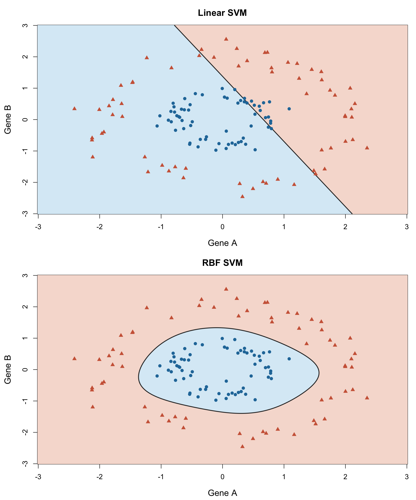
SVM
Choosing SVM hyperparameters
SVM has several hyperparameters that influence the model’s flexibility and predictive performance.
| Hyperparameter | Role |
|---|---|
| Kernel | Determines whether the decision boundary is linear or nonlinear. |
| \(C\) (cost) | Controls regularization and penalties for margin violations. |
| \(\gamma\) (gamma) | Controls how localized the influence of observations is (RBF kernel). |
- Model parameters (e.g., weights and intercept) are learned during training.
- Hyperparameters are selected using validation or cross-validation.
SVM
Advantages
- Can work well in high-dimensional feature spaces, such as gene expression or methylation datasets.
- Can model both linear and nonlinear decision boundaries.
- Regularization allows control over model complexity.
- Can generalize well when the kernel and hyperparameters are appropriately selected.
Limitations
- Requires careful selection of hyperparameters.
- Performance can be sensitive to feature scaling.
- Kernel SVMs can become computationally expensive for large datasets.
- Nonlinear SVMs are often less interpretable than simpler linear models.
- Performance may be affected by noisy features, class imbalance, and the choice of kernel.
KNN vs SVM
Although both KNN and SVM can be used for classification, they approach prediction differently.
| KNN | SVM | |
|---|---|---|
| Main idea | Predict from nearby observations | Learn a separating decision boundary |
| Learning approach | Instance-based | Optimization-based |
| Decision boundaries | Determined by local neighborhoods | Determined by the fitted margin-based classifier |
| Key hyperparameters | k, distance metric | C, kernel, gamma |
| Nonlinear classification | Naturally supported | Supported through kernels |
| Feature scaling | Important | Important |
Generalization
Underfitting and overfitting
The goal is to generalize well to new, unseen data, not just fit the training data.
- Underfitting: Model is too simple to capture important patterns → poor training and validation performance.
- Overfitting: Model learns noise and sample-specific patterns → good training performance but poor validation performance.
- Bias–variance trade-off: Increasing model complexity generally reduces bias but may increase variance.
- How to detect it? Compare training and validation performance:
- Poor performance on both → possible underfitting.
- Large gap between training and validation performance → possible overfitting.
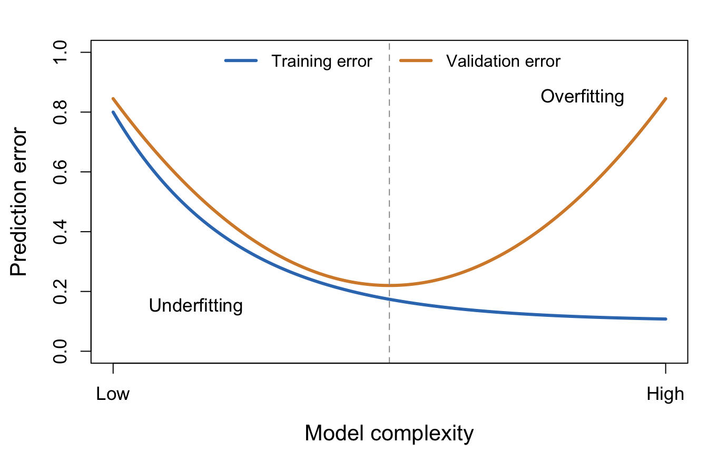
Figure 6: Conceptual relationship between model complexity and training and validation error.
Training, validation and test sets
To estimate performance on new, unseen data, we divide observations into separate subsets:
- Training set: Used to fit the model and learn relationships between features and outcomes.
- Validation set: Used to compare models and select hyperparameters.
- Test set: Used only for the final evaluation of the selected model.
Important: The test set must remain untouched during model development. Repeatedly using it to guide model selection can lead to overly optimistic performance estimates.
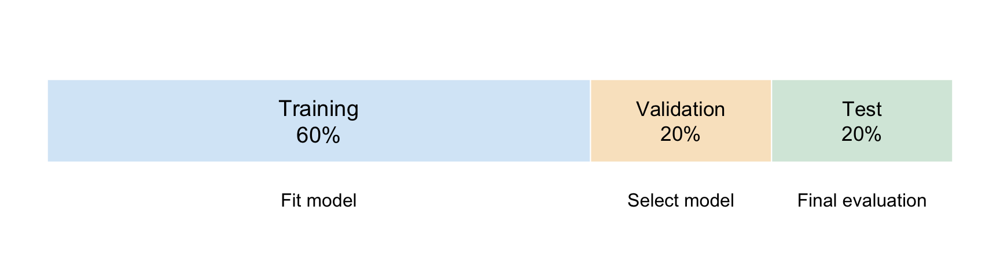
Figure 7: Example of splitting data into training (60%), validation (20%), and test (20%) subsets.
Choosing an appropriate splitting strategy
Observations are not always independent, and random splitting may not be appropriate for every dataset.
Depending on the study design, we may use:
- Random splitting: Suitable when observations are approximately independent and identically distributed.
- Stratified splitting: Preserves approximately the same class proportions in each subset, particularly useful for imbalanced classification datasets.
- Grouped splitting: Keeps related observations together, such as repeated measurements from the same patient.
- Temporal splitting: Uses earlier observations for training and later observations for evaluation, when the aim is to predict future outcomes.
The splitting strategy should reflect how the model will be used in practice.
Data leakage
Data leakage occurs when information unavailable during real-world prediction influences model training or selection.
Common examples:
- Selecting features using the entire dataset before splitting.
- Standardizing or imputing using validation or test data.
- Including repeated measurements from the same patient in both training and test sets.
- Using predictors that become available only after the outcome.
How to prevent leakage:
- Split data before data-dependent preprocessing and feature selection.
- Learn preprocessing transformations from training data only.
- During cross-validation, repeat these steps within each training fold.
Model evaluation: classification
Model evaluation: classification
- Classification performance is evaluated by comparing predicted classes with true class labels.
- Classifiers may produce:
- Class labels directly (e.g., disease / healthy).
- Scores or probabilities that can be converted into class labels using a threshold.
- Example: With a probability threshold of 0.5:
- Probability \(\geq 0.5\) → Positive class.
- Probability \(< 0.5\) → Negative class.
- The classification threshold affects the number of correct and incorrect predictions, and therefore model performance metrics.
Model evaluation: classification
Confusion matrix
A confusion matrix compares actual and predicted class labels.
| Predicted positive | Predicted negative | |
|---|---|---|
| Actual positive | True positive (TP) | False negative (FN) |
| Actual negative | False positive (FP) | True negative (TN) |
- TP / TN: Correct predictions.
- FP: Negative observation incorrectly predicted as positive.
- FN: Positive observation incorrectly predicted as negative.
These four quantities form the basis of common classification metrics.
Model evaluation: classification
Different metrics capture different aspects of predictive performance
| Metric | Formula | What does it measure? |
|---|---|---|
| Accuracy | \(\frac{TP+TN}{TP+TN+FP+FN}\) | Overall proportion of correct predictions |
| Sensitivity (recall) | \(\frac{TP}{TP+FN}\) | How many actual positives did we detect? |
| Specificity | \(\frac{TN}{TN+FP}\) | How many actual negatives did we identify? |
| Precision (PPV) | \(\frac{TP}{TP+FP}\) | How many predicted positives were correct? |
| F1 score | \(2\frac{\mathrm{Precision}\times\mathrm{Recall}}{\mathrm{Precision}+\mathrm{Recall}}\) | Harmonic mean of precision and recall |
Model evaluation: classification
Class imbalance
Why class imbalance matters
- Accuracy can be misleading when one class is much more common than another.
- Example: If only 5% of individuals have a disease, predicting no disease for everyone gives:
- 95% accuracy, but
- 0% sensitivity — no affected individuals are identified.
- For imbalanced data, consider sensitivity, precision, F1 score and PR AUC, rather than accuracy alone.
- The choice of metric should reflect the scientific question and consequences of prediction errors.
ROC curves and ROC AUC
A Receiver Operating Characteristic (ROC) curve evaluates a binary classifier across different classification thresholds.
The ROC curve plots:
- True positive rate (sensitivity) on the y-axis.
- False positive rate (1 − specificity) on the x-axis.
Thus, the ROC curve shows the trade-off between correctly identifying positive observations and incorrectly classifying negative observations as positive.

ROC curves and ROC AUC
The Area Under the ROC Curve (ROC AUC) summarizes the model’s ability to distinguish between the two classes, independently of any single classification threshold.
- ROC AUC = 0.5: no ranking discrimination, equivalent to random guessing.
- ROC AUC = 1: perfect discrimination.
- Higher ROC AUC generally indicates better discrimination.
A high ROC AUC does not necessarily mean that a model performs well at a particular classification threshold or that its estimated probabilities are well calibrated.
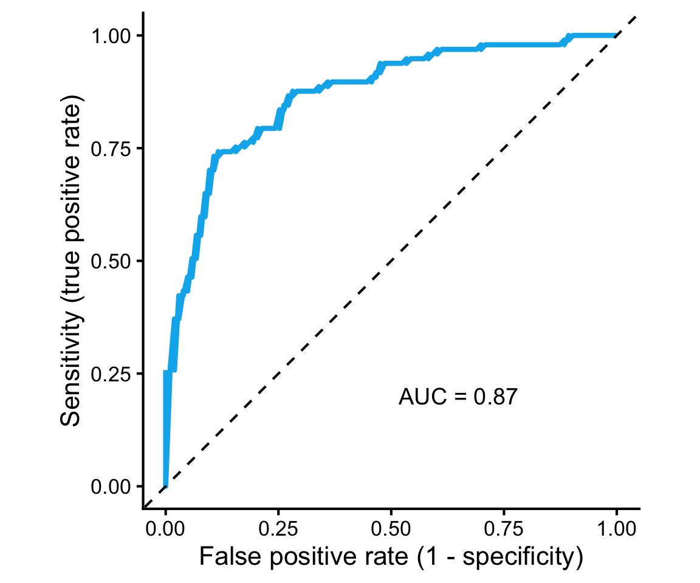
Which metric should we use?
There is no single best metric for every classification problem.
- Accuracy: Overall proportion of correct predictions; most informative when class imbalance and error costs are not major concerns.
- Sensitivity: Important when missing positive observations is particularly costly.
- Specificity: Important when avoiding false-positive classifications is a priority.
- Precision: Important when positive predictions need to be reliable.
- F1: Useful when balancing precision and recall.
- ROC AUC: Evaluates discrimination across classification thresholds.
- PR AUC / AP: Particularly informative for rare positive outcomes.
Model evaluation: regression
Evaluating regression models
- In regression, we predict a continuous outcome, such as age or blood pressure.
- We compare observed values (\(y_i\)) with predicted values (\(\hat{y}_i\)).
- The difference is the prediction error:
\[ e_i = y_i - \hat{y}_i \]
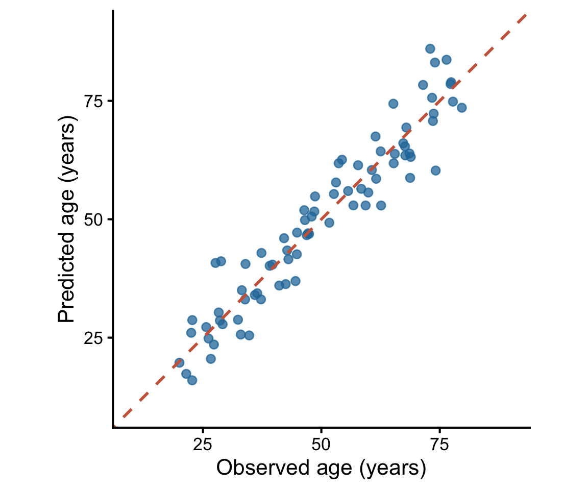
Figure 10: Observed versus predicted age. Dashed line represents perfect predictions.
Evaluating regression models
Regression metrics
Mean Absolute Error (MAE)
\[ MAE = \frac{1}{n}\sum_{i=1}^{n}|y_i-\hat{y}_i| \]
- Average absolute prediction error, in the same units as the outcome.
Mean Squared Error (MSE)
\[ MSE = \frac{1}{n}\sum_{i=1}^{n}(y_i-\hat{y}_i)^2 \]
- Penalizes large errors more strongly; expressed in squared units.
Root Mean Squared Error (RMSE)
\[ RMSE = \sqrt{\frac{1}{n}\sum_{i=1}^{n}(y_i-\hat{y}_i)^2} \]
- Square root of MSE; penalizes large errors more strongly than MAE, but is expressed in the original units.
Evaluating regression models
Which regression metric should we use?
| Metric | Interpretation | When useful |
|---|---|---|
| MAE | Average absolute error | When typical prediction errors matter |
| MSE | Average squared error | When large errors should receive stronger penalties |
| RMSE | Square root of average squared error | When large errors matter but results should remain in the original units |
For example, in a model predicting chronological age:
- MAE = 4 years: Predictions are off by 4 years on average in absolute terms.
- RMSE = 6 years: Larger individual prediction errors contribute more strongly.
The choice of evaluation metric should reflect the scientific question and the consequences of different prediction errors.
Hyperparameter tuning and cross-validation
Hyperparameter tuning
- Hyperparameters control how a model learns and how flexible it is.
- Unlike model parameters, they are not learned directly during model fitting.
Examples:
- KNN: Number of neighbors (\(k\)).
- SVM: Regularization parameter (\(C\)), kernel type, and \(\gamma\) for the RBF kernel.
Goal: Find hyperparameter values that give good predictive performance on unseen data, typically using validation or cross-validation.
Hyperparameter tuning using a validation set
Consider KNN classification. We want to choose the number of neighbors, \(k\).
A simple approach is to:
- Split the development data into training and validation sets, keeping the test set separate.
- Train KNN models using different values of \(k\), for example 1, 3, 5, 7, 9, and 11.
- Evaluate each model on the validation set using a chosen performance metric, such as accuracy.
- Select the value of \(k\) with the best validation performance.
However, the result may depend on which observations happen to be included in that split. A different random split might produce a different optimal value of \(k\).
K-fold cross-validation
K-fold cross-validation (CV) provides a more systematic approach to model evaluation and hyperparameter selection.
Instead of using one fixed validation set, we divide the development data into \(K\) approximately equal-sized folds.
For each candidate hyperparameter value:
- Train the model using \(K-1\) folds.
- Evaluate it on the remaining fold.
- Repeat the process until each fold has served as the validation set once.
- Calculate the mean performance across all \(K\) folds.
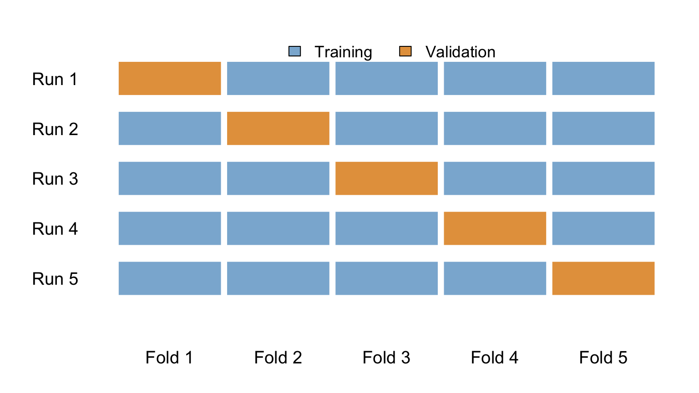
K-fold cross-validation
The mean CV performance is:
\[ \overline{M}_{CV}=\frac{1}{K}\sum_{i=1}^{K}M_i \]
where \(M_i\) is the performance metric calculated on validation fold \(i\).
We can compare mean CV scores for different values of \(k\) and select the one with the best performance.
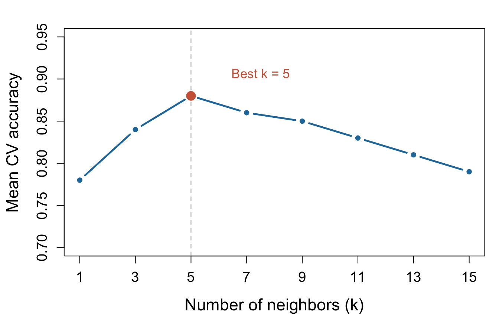
Figure 12: Hyperparameter tuning in KNN. Mean CV accuracy for different values of k. The best-performing value is highlighted.
Fitting and evaluating the final model
- Select the best model and hyperparameters using validation or cross-validation.
- Refit the model using all training and validation data.
- Evaluate once on the untouched test set to estimate performance on unseen data.
- Report results, including the model, hyperparameters, splitting strategy, evaluation metrics and uncertainty where appropriate.
- Use the final model to predict outcomes for new observations.
Key principle: The test set must not influence model selection or tuning.
Nested cross-validation
Nested cross-validation uses two CV loops to separate model selection from performance evaluation.
- Inner loop: Selects the best hyperparameters using cross-validation on the outer training data.
- Outer loop: Evaluates the selected model on held-out observations not used during tuning.
- The process is repeated across all outer folds, and performance is summarized across outer test folds.
Advantages:
- Reduces optimistic bias caused by hyperparameter tuning.
- Particularly useful for small datasets, where efficient use of observations is important.
The inner loop selects the model; the outer loop estimates the performance of the entire model-selection procedure.
Machine learning frameworks and libraries
General-purpose ML frameworks:
- R:
caret,tidymodels,mlr3 - Python:
scikit-learn
Specialized libraries:
- Regularized regression:
glmnet - Tree-based methods:
ranger,XGBoost,LightGBM,CatBoost - Survival analysis:
scikit-survival,mlr3proba - Imbalanced classification:
imbalanced-learn - Deep learning:
PyTorch,TensorFlow/Keras
Different tools, same principles of data splitting, preprocessing, avoiding leakage, model evaluation and reproducibility.
Labs
KNN demo: data splitting into train, validation and test
- In R, follow carefully to understand splitting data into train/validation/test
Exercise: cross-validation
- Try adding code to replace train/validation/test tunning using CV
Tidymodels demo
- See if you get the syntax and once you do, how easy is to use SVM instead of KNN
Sklearn demo
- Same as above, see if you get the syntax and once you do, how easy is to use SVM instead of KNN
Machine Learning for Life Sciences (ML4LS)